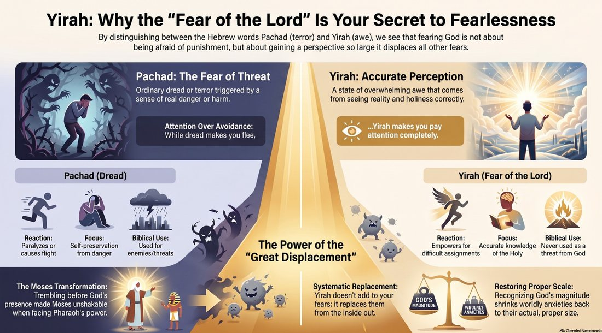
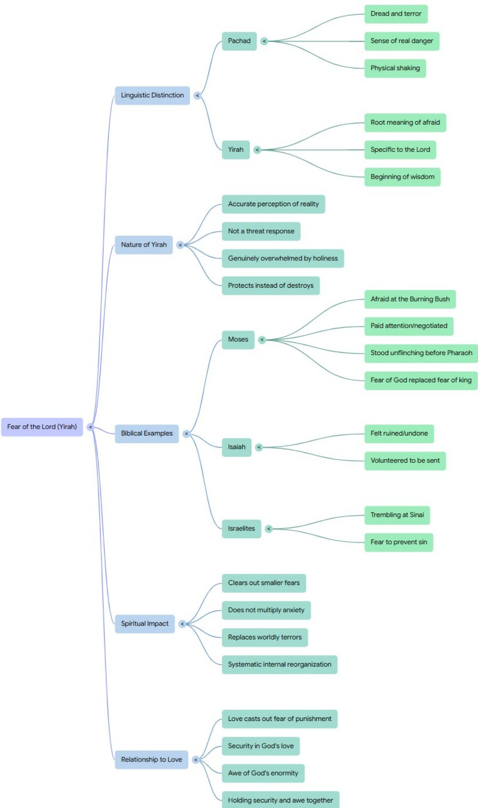

How can a man who is too terrified to look at a burning bush become the same man who, just months later, stares down the most powerful king on earth without flinching?
In the wilderness of Midian, Moses removes his sandals and hides his face. He is not performing a polite ritual; he is genuinely overwhelmed, vibrating with the visceral realization that he is standing in the presence of a holiness that could consume him. Yet, shortly thereafter, he walks into Pharaoh’s throne room — the epicenter of ancient imperial power — and delivers a high-stakes ultimatum without a tremor in his voice.
This presents a profound narrative paradox: was Moses a man ruled by fear, or a man who had stopped being afraid of anything at all? Most modern interpretations of the “fear of the Lord” either treat it as a threat of punishment or, in an attempt to make God “friendlier,” soften it into mere respect. Both miss the mark. The linguistic reality of the Hebrew text suggests that “fear” is not a burden to be carried, but a transformative lens through which we see the world.
The two registers of the trembling heart
To unlock the “Moses Paradox,” we must first dismantle the linguistic flattening that occurs in English. The Hebrew Bible employs two distinct terms for fear, and they operate in entirely different psychological realms.
The first word is pachad (פַּחַד). This is the word for dread, terror, and the threat-response. It is the sudden seizing of the chest when danger is imminent. The book of Job describes pachad as an ambush in the night, a fear that makes the bones shake and the whole body recoil (Job 4:14). And notably, pachad is never the word behind the covenant phrase the Bible commends to believers — the “fear of the LORD” that begins wisdom. Where pachad does attach to God’s name, it describes the dread of judgment falling on His enemies (as in 2 Chronicles 17:10), not the wisdom-fear His people are called to.
The word actually used in that phrase is yirah (יִרְאָה). This is a far more complex term. While it certainly includes the physical reality of being afraid — the “fright” that makes the knees knock — it is a spectrum word. It encompasses everything from the gut-punch of standing before the infinite to the profound weight of absolute awe. To flatten yirah into only “respectful awe” and remove the element of fright would be, quite simply, dishonest teaching. Yirah is a reality-response; it is the reaction of a finite creature finally acknowledging an infinite Creator.

Fear as accurate perception
In the Book of Proverbs, yirah is placed in a deliberate poetic parallel that reveals its true function: “The fear of the LORD is the beginning of wisdom, and the knowledge of the Holy One is understanding” (Proverbs 9:10).
In the Hebrew mind, this fear is not a reaction to a threat; it is a form of accurate perception. It is placed alongside “knowledge” and “understanding.” To have yirah is to see the scale of the universe correctly. Imagine a candle flickering in a dark room; it seems bright and significant until the sun rises. When the sun appears, the candle isn’t “punished” — it is simply eclipsed. Its light is displaced by a superior reality. Yirah is the act of seeing the Sun. When we see the true scale of the Divine, we finally see everything else in its proper, much smaller proportion.
The Moses effect: the space in the chest
The transformation of Moses — from trembling at the bush to standing firm before the throne — is a phenomenon we might call systematic replacement. Once yirah takes root in a human being, it does not add to their list of anxieties; it replaces them.
Moses was not fearless before Pharaoh because he had lost the capacity for fear. Rather, he was fearless because he had already survived an encounter with the Infinite. Pharaoh, with all his chariots and gods, simply couldn’t compete for the space in Moses’s chest anymore. There was no room left for the king of Egypt, because that space was already occupied by the King of the Universe.
The Isaiah paradox: undone but ready
We see this same weight of presence in the calling of the prophet Isaiah. In the temple, he sees the Lord high and lifted up, the train of His robe filling the sanctuary. Isaiah’s response is visceral: “Woe is me! For I am undone” (Isaiah 6:5).
This was not a warm, pleasant devotional feeling. It was the experience of being psychologically and spiritually dismantled by the weight of holiness. Yet this “undoing” did not lead to paralysis. In the very same scene, after being ruined by yirah, Isaiah offers the boldest response possible: “Here am I; send me” (Isaiah 6:8). The fear of God cleared away his smaller insecurities and self-preservations, sending him running directly toward the most difficult assignment a human could receive.
The Sinai smoking gun: stop being afraid, start fearing rightly
The distinction between these two fears is most sharply defined at the base of Mount Sinai. The Israelites witnessed the smoke and the fire, and they were physically terrified, begging Moses to speak on their behalf so they wouldn’t die. They were trapped in pachad — the fear that destroys, sourced in the unknown and the threat of danger.
Moses responds with a sentence that serves as the linguistic smoking gun of the entire Bible: “Do not fear… that the fear of him may be before you” (Exodus 20:20).
At first glance, this sounds like a contradiction. But Moses is using two different registers of fear in one breath. He is saying: stop being afraid (the terror-response), so that you may fear Him rightly (the reality-response). One fear is meant to drive out the other. The yirah that protects is sourced in seeing God clearly — which effectively kills the fear that destroys.
Perfect love and the end of anxiety
This linguistic clarity finally resolves the tension with the New Testament promise that “perfect love casts out fear” (1 John 4:18).
The fear being cast out by love is the pachad of punishment — the anxious, twitchy dread one feels toward a harsh or unpredictable master. Love destroys the idea that God is a threat to your existence. But love does not cast out yirah. In fact, they are two sides of the same coin. It is entirely possible — and indeed necessary — to hold deep security in love and genuine awe at the same time. You can be perfectly safe in the arms of a God who is also an all-consuming fire.
Shrinking the deadlines and the opinions
For the modern reader, the “fear of the Lord” was never intended to be one more terror added to a crowded list of anxieties. We live in a state of constant, low-grade pachad. We tremble at the weight of a deadline, the shifting winds of a specific person’s opinion, or the looming possibility of failure. We allow these things to occupy the space in our chest, where they grow to monstrous, distorted sizes.
Linguistic insight calls us to a radical reorganization of our lives. When yirah is understood correctly, the Divine becomes so large, so real, and so enormous and good that everything else finally shrinks to its proper size. The fear of God is not the source of anxiety; it is the cure for it.
Take a moment to look at the list of things that currently keep you awake at night. What have you allowed to hold the weight that only God was meant to carry? What have you been afraid of that the “fear of the Lord” was actually meant to replace? Fearing God rightly doesn’t make you a coward; it is the only thing that can finally make you steady.

Comments